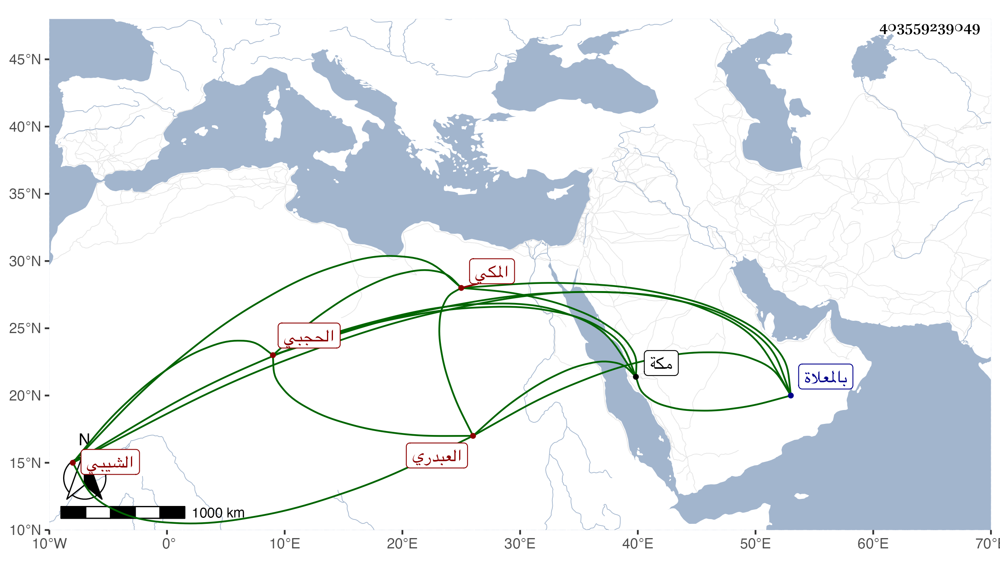

0902Sakhawi.DawLamic.ITO20230111-ara1.EIS1600.403559239049
Biography ID: 403559239049
14
أبو البركات بن يوسف بن محمد بن علي بن محمد بن إدريس بن غانم بن مفرج الزين بن الجمال أبي المحاسن بن الجمال أبي راجح بن النور أبي الحسن بن أبي راجح بن أبي غانم العبدري الشيبي الحجبي المكي شيخ الحجبة وفاتح الكعبة وابن شيخها بل سلالة مشايخها . ولد بعد سنة عشرين وثمانمائة تقريبا بمكة واستقر في المشيخة بعد عمه السراج عمر بن أبي راجح في سنة إحدى وثمانين وقدم على أولاد المتوفى لمراعاتهم الأسن في التقديم وكان فقيرا ساكنا . مات بعد تعلل طويل في آخر يوم الثلاثاء خامس عشري ربيع الثاني سنة ثلاث وتسعين وصلى عليه بعد الصبح من الغد ثم دفن بالمعلاة .
